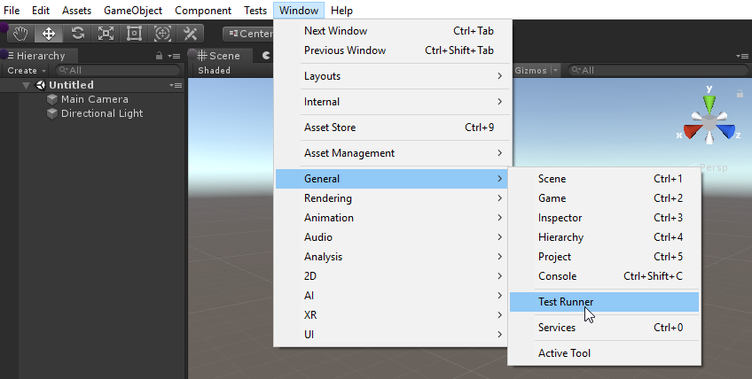

Getting started with Unity Test Framework¶
To access the Unity Test Framework (UTF) in the Unity Editor, open the Test Runner window; go to Window > General > Test Runner.

To get started with UTF, follow the workflows below:
For further information, see the resources and reference sections.